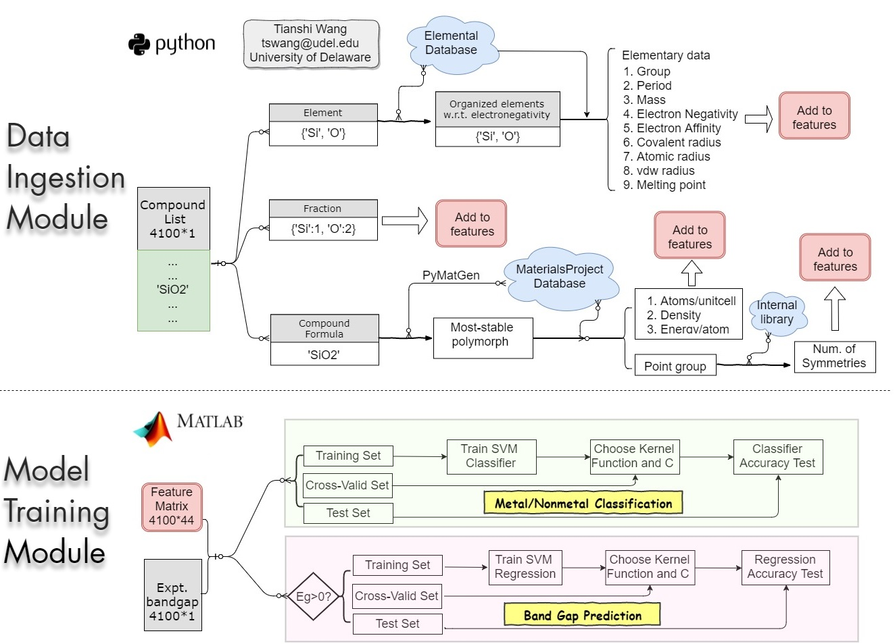

I am a quantatitive researcher at
Chatham Financial
working on mathematical models and also an enthusiastic data scientist.
On this site, you can find details on my background, experience, skills and more.
For any question, please don’t hesitate to reach out.
Buy2Sell, converting collectors to sellers in an online marketplace
a project completed during my
Insight Data Science fellowship
Covetly suffers from the high variance of inventory levels across categories. To add inventory for categories in shortage, the client expects this project to suggest a list of collectors who can be prompted to sell. This project:
Metal/nonmetal Classification and Bandgap Prediction
a research project completed during my Ph.D. in Materials Science at the
University of Delaware
The workflow below shows how the code works for classifying metal/nonmetal and predicting band gaps.
The data ingestion module collects 44 features for each of the ~4100 materials from databases such as
MaterialsProject . Then, the collected data is used to train support vector machine (SVM) classifier and
SVM regression. Finally, we test the models on test set. The result shows the trained model can separate
metal/nonmetal with an accuracy of ~90% and the bandgap prediction accuracy (RMSE = 0.7 eV) outperforms
DFT-LDA calculations.

Workflow of the developed code for metal/nonmetal classification and bandgap projection
Stock Clustering and Selection from S&P500
This algorithm assumes stocks which performed similarly in the past will likely continue doing so in the near future. Therefore, it is regarded as a buy single if a stock performed worse than others in a cluster. S&P500 stocks are clustered by their daily performance from 201401 to 201801 using KMeans method. Based on their performance during 201802-201805, ~40 underperformed (to-buy) and outperformed (to-sell) stocks are selected. The selected to-buy stocks return 2.2% in 201806 (or 26% annually) compared to 0.5% for market and -0.6% for to-sell stocks.
Diagram of stock-selection procedure using this algorithm
Code development to solve real-world problems is important for me. In addition, I have gained experiences of large-scale scientific computing using clusters e.g. SDSC Comet and UTexas Stampede. In the below example, I demonstrate a code which I and Wei Li developed for simulation of epitaxial growth process in molecular beam epitaxy (MBE). Using this code, you can observe different growth morphologies: statistically roughing, step-flow, and islanding by tuning the input parameters. The code was first written in Python and Cython by us based on the KMCInterative code. However, to increase running speed, we finally wrote it in C++ using QT and OpenGL libraries.